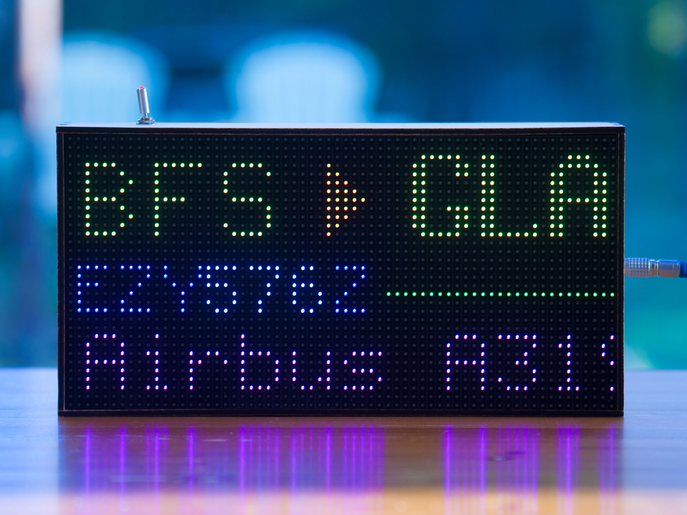

Overview
What's that
over my house?
A Raspberry Pi-powered RGB LED matrix that shows you what aircraft are overhead.
It sits on your fridge, or a shelf, or wherever you decide to put it, and quietly answers the important question: "What's that plane?"
FlightTracker takes live aircraft data, works out what is nearby, and displays it on a 64×32 RGB LED matrix. When there is nothing overhead, it can show the time, weather, temperature, rainfall, or satellite passes.
It started as a daft fridge gadget. It has since become a fairly capable little display platform.
Still a daft fridge gadget though.
